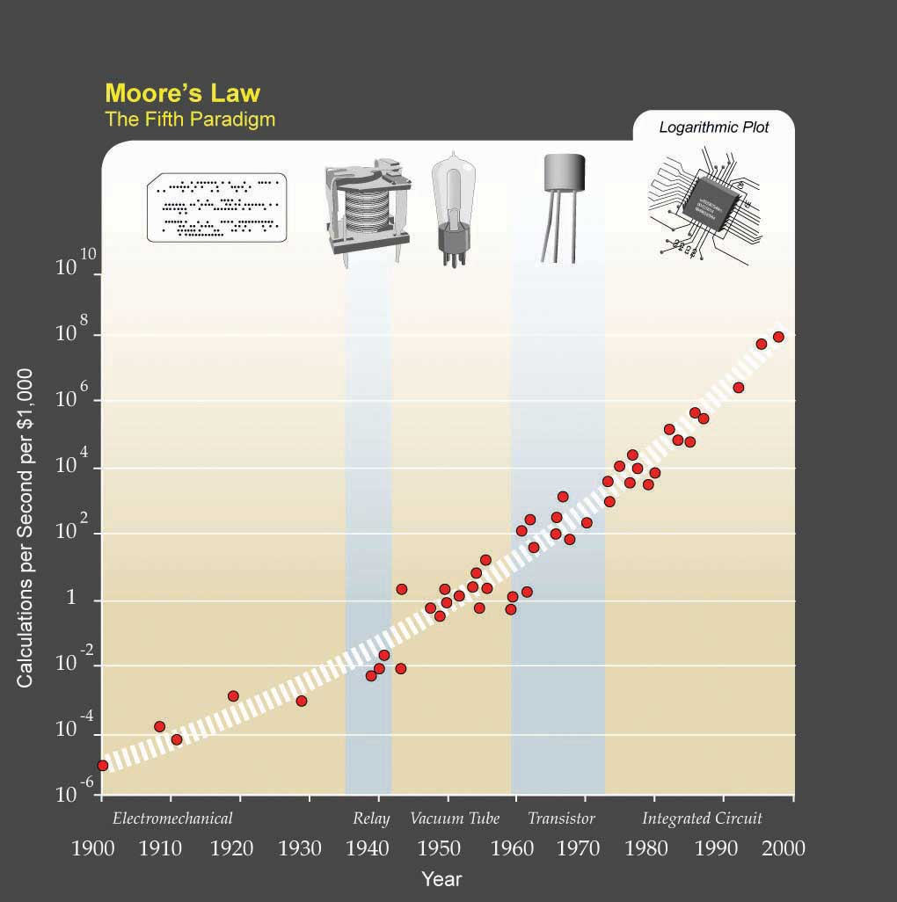
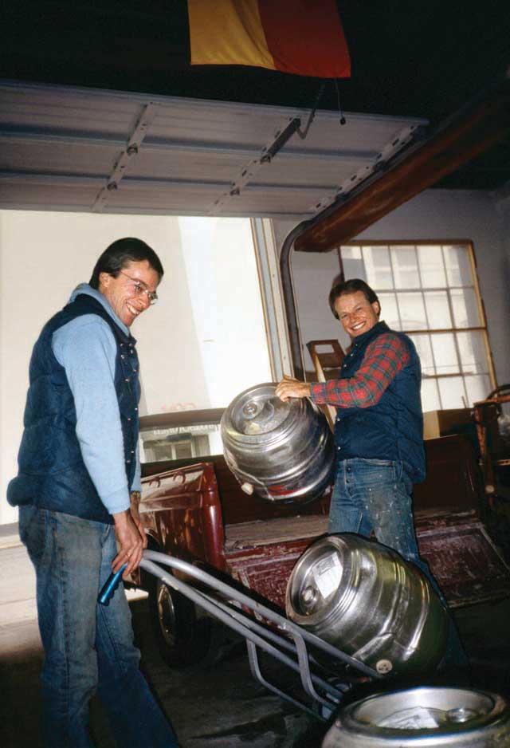
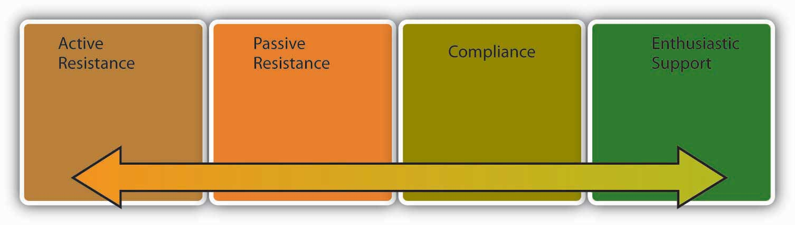

Organizational changeThe movement of an organization from one state of affairs to another. is the movement of an organization from one state of affairs to another. A change in the environment often requires change within the organization operating within that environment. Change in almost any aspect of a company’s operation can be met with resistance, and different cultures can have different reactions to both the change and the means to promote the change. To better facilitate necessary changes, several steps can be taken that have been proved to lower the anxiety of employees and ease the transformation process. Often, the simple act of including employees in the change process can drastically reduce opposition to new methods. In some organizations, this level of inclusion is not possible, and instead organizations can recruit a small number of opinion leaders to promote the benefits of coming changes.
Organizational change can take many forms. It may involve a change in a company’s structure, strategy, policies, procedures, technology, or culture. The change may be planned years in advance or may be forced on an organization because of a shift in the environment. Organizational change can be radical and swiftly alter the way an organization operates, or it may be incremental and slow. In any case, regardless of the type, change involves letting go of the old ways in which work is done and adjusting to new ways. Therefore, fundamentally, it is a process that involves effective people management.
Managers carrying out any of the P-O-L-C functions often find themselves faced with the need to manage organizational change effectively. Oftentimes, the planning process reveals the need for a new or improved strategy, which is then reflected in changes to tactical and operational plans. Creating a new organizational design (the organizing function) or altering the existing design entails changes that may affect from a single employee up to the entire organization, depending on the scope of the changes. Effective decision making, a Leadership task, takes into account the change-management implications of decisions, planning for the need to manage the implementation of decisions. Finally, any updates to controlling systems and processes will potentially involve changes to employees’ assigned tasks and performance assessments, which will require astute change management skills to implement. In short, change management is an important leadership skill that spans the entire range of P-O-L-C functions.
Organizational change is often a response to changes to the environment. For example, agencies that monitor workplace demographics such as the U.S. Department of Labor and the Organization for Economic Co-operation and Development have reported that the average age of the U.S. workforce will increase as the baby boom generation nears retirement age and the numbers of younger workers are insufficient to fill the gap.Lerman, R. I., & Schmidt, S. R. (2006). Trends and challenges for work in the 21st century. Retrieved September 10, 2008, from U.S. Department of Labor Web site, http://www.dol.gov/oasam/programs/history/herman/reports/futurework/conference/trends/trendsI.htm. What does this mean for companies? Organizations may realize that as the workforce gets older, the types of benefits workers prefer may change. Work arrangements such as flexible work hours and job sharing may become more popular as employees remain in the workforce even after retirement. It is also possible that employees who are unhappy with their current work situation will choose to retire, resulting in a sudden loss of valuable knowledge and expertise in organizations. Therefore, organizations will have to devise strategies to retain these employees and plan for their retirement. Finally, a critical issue is finding ways of dealing with age-related stereotypes which act as barriers in the retention of these employees.
Sometimes change is motivated by rapid developments in technology. Moore’s law (a prediction by Gordon Moore, cofounder of Intel) dictates that the overall complexity of computers will double every 18 months with no increase in cost.Anonymous. Moore’s Law. Retrieved September 5, 2008, from Answers.com,http://www.answers.com/topic/moore-s-law. Such change is motivating corporations to change their technology rapidly. Sometimes technology produces such profound developments that companies struggle to adapt. A recent example is from the music industry. When music CDs were first introduced in the 1980s, they were substantially more appealing than the traditional LP vinyl records. Record companies were easily able to double the prices, even though producing CDs cost a fraction of what it cost to produce LPs. For decades, record-producing companies benefited from this status quo. Yet when peer-to-peer file sharing through software such as Napster and Kazaa threatened the core of their business, companies in the music industry found themselves completely unprepared for such disruptive technological changes. Their first response was to sue the users of file-sharing software, sometimes even underage kids. They also kept looking for a technology that would make it impossible to copy a CD or DVD, which has yet to emerge. Until Apple’s iTunes came up with a new way to sell music online, it was doubtful that consumers would ever be willing to pay for music that was otherwise available for free (albeit illegally so). Only time will tell if the industry will be able to adapt to the changes forced on it.Lasica, J. D. (2005). Darknet: Hollywood’s war against the digital generation. Hoboken, NJ: Wiley.
Figure 7.9
Kurzweil expanded Moore’s law from integrated circuits to earlier transistors, vacuum tubes, relays, and electromechanical computers to show that his trend holds there as well.
Globalization is another threat and opportunity for organizations, depending on their ability to adapt to it. Because of differences in national economies and standards of living from one country to another, organizations in developed countries are finding that it is often cheaper to produce goods and deliver services in less developed countries. This has led many companies to outsource (or “offshore”) their manufacturing operations to countries such as China and Mexico. In the 1990s, knowledge work was thought to be safe from outsourcing, but in the 21st century we are also seeing many service operations moved to places with cheaper wages. For example, many companies have outsourced software development to India, with Indian companies such as Wipro and Infosys emerging as global giants. Given these changes, understanding how to manage a global workforce is a necessity. Many companies realize that outsourcing forces them to operate in an institutional environment that is radically different from what they are used to at home. Dealing with employee stress resulting from jobs being moved overseas, retraining the workforce, and learning to compete with a global workforce on a global scale are changes companies are trying to come to grips with.
Market changes may also create internal changes as companies struggle to adjust. For example, as of this writing, the airline industry in the United States is undergoing serious changes. Demand for air travel was reduced after the September 11 terrorist attacks. At the same time, the widespread use of the Internet to book plane travels made it possible to compare airline prices much more efficiently and easily, encouraging airlines to compete primarily based on cost. This strategy seems to have backfired when coupled with the dramatic increases in the cost of fuel that occurred begining in 2004. As a result, by mid-2008, airlines were cutting back on amenities that had formerly been taken for granted for decades, such as the price of a ticket including meals, beverages, and checking luggage. Some airlines, such as Delta and Northwest Airlines, merged to stay in business.
How does a change in the environment create change within an organization? Environmental change does not automatically change how business is done. Whether the organization changes or not in response to environmental challenges and threats depends on the decision makers’ reactions to what is happening in the environment.
Figure 7.10
In 1984, brothers Kurt (on the left) and Rob Widmer (on the right) founded Widmer Brothers, which has merged with another company to become the 11th largest brewery in the United States.
Photo and permission given by Widmer Brothers Brewing Co.
It is natural for once small start-up companies to grow if they are successful. An example of this growth is the evolution of the Widmer Brothers Brewing Company, which started as two brothers brewing beer in their garage to becoming the 11th largest brewery in the United States. This growth happened over time as the popularity of their key product—Hefeweizen—grew in popularity and the company had to expand to meet demand growing from the two founders to the 11th largest brewery in the United States by 2008. In 2007, Widmer Brothers merged with Redhook Ale Brewery. Anheuser-Busch continues to have a minority stake in both beer companies. So, while 50% of all new small businesses fail in their first year,Get ready. United States Small Business Association. Retrieved November 21, 2008, from http://www.sba.gov/smallbusinessplanner/plan/getready/SERV_SBPLANNER_ISENTFORU.html. those that succeed often evolve into large, complex organizations over time.
Change can also occur if the company is performing poorly and if there is a perceived threat from the environment. In fact, poorly performing companies often find it easier to change compared with successful companies. Why? High performance actually leads to overconfidence and inertia. As a result, successful companies often keep doing what made them successful in the first place. When it comes to the relationship between company performance and organizational change, the saying “nothing fails like success” may be fitting. For example, Polaroid was the number one producer of instant films and cameras in 1994. Less than a decade later, the company filed for bankruptcy, unable to adapt to the rapid advances in one-hour photo development and digital photography technologies that were sweeping the market. Successful companies that manage to change have special practices in place to keep the organization open to changes. For example, Finnish cell phone maker Nokia finds that it is important to periodically change the perspective of key decision makers. For this purpose, they rotate heads of businesses to different posts to give them a fresh perspective. In addition to the success of a business, change in a company’s upper-level management is a motivator for change at the organization level. Research shows that long-tenured CEOs are unlikely to change their formula for success. Instead, new CEOs and new top management teams create change in a company’s culture and structure.Barnett, W. P., & Carroll, G. R. (1995). Modeling internal organizational change. Annual Review of Sociology, 21, 217–236; Boeker, W. (1997). Strategic change: The influence of managerial characteristics and organizational growth. Academy of Management Journal, 40, 152–170; Deutschman, A. (2005, March). Building a better skunk works. Fast Company, 92, 68–73.
Changing an organization is often essential for a company to remain competitive. Failure to change may influence the ability of a company to survive. Yet employees do not always welcome changes in methods. According to a 2007 survey conducted by the Society for Human Resource Management (SHRM), employee resistance to change is one of the top reasons change efforts fail. In fact, reactions to organizational change may range from resistance to compliance to enthusiastic support of the change, with the latter being the exception rather than the norm.Anonymous. (December 2007). Change management: The HR strategic imperative as a business partner. HR Magazine, 52(12); Huy, Q. N. (1999). Emotional capability, emotional intelligence, and radical change. Academy of Management Review, 24, 325–345.
Figure 7.11
Reactions to change may take many forms.
Active resistanceThe most negative reaction to a proposed change attempt. is the most negative reaction to a proposed change attempt. Those who engage in active resistance may sabotage the change effort and be outspoken objectors to the new procedures. In contrast, passive resistanceBeing disturbed by changes without necessarily voicing these opinions. involves being disturbed by changes without necessarily voicing these opinions. Instead, passive resisters may dislike the change quietly, feel stressed and unhappy, and even look for a new job without necessarily bringing their concerns to the attention of decision makers. ComplianceGoing along with proposed changes with little enthusiasm., however, involves going along with proposed changes with little enthusiasm. Finally, those who show enthusiastic supportDefenders of the new way and those who actually encourage others to give support to the change effort. are defenders of the new way and actually encourage others around them to give support to the change effort as well.
To be successful, any change attempt will need to overcome resistance on the part of employees. Otherwise, the result will be loss of time and energy as well as an inability on the part of the organization to adapt to the changes in the environment and make its operations more efficient. Resistance to change also has negative consequences for the people in question. Research shows that when people react negatively to organizational change, they experience negative emotions, use sick time more often, and are more likely to voluntarily leave the company.Fugate, M., Kinicki, A. J., & Prussia, G. E. (2008). Employee coping with organizational change: An examination of alternative theoretical perspectives and models. Personnel Psychology, 61, 1–36. These negative effects can be present even when the proposed change clearly offers benefits and advantages over the status quo.
The following is a dramatic example of how resistance to change may prevent improving the status quo. Have you ever wondered why the keyboards we use are shaped the way they are? The QWERTY keyboard, named after the first six letters in the top row, was actually engineered to slow us down. When the typewriter was first invented in the 19th century, the first prototypes of the keyboard would jam if the keys right next to each other were hit at the same time. Therefore, it was important for manufacturers to slow typists down. They achieved this by putting the most commonly used letters to the left-hand side and scattering the most frequently used letters all over the keyboard. Later, the issue of letters being stuck was resolved. In fact, an alternative to the QWERTY developed in the 1930s by educational psychologist August Dvorak provides a much more efficient design and allows individuals to double traditional typing speeds. Yet the Dvorak keyboard never gained wide acceptance. The reasons? Large numbers of people resisted the change. Teachers and typists resisted because they would lose their specialized knowledge. Manufacturers resisted due to costs inherent in making the switch and the initial inefficiencies in the learning curve.Diamond, J. (2005). Guns, germs, and steel: The fates of human societies. New York: W. W. Norton. In short, the best idea does not necessarily win, and changing people requires understanding why they resist.
People often resist change for the simple reason that change disrupts our habits. When you hop into your car for your morning commute, do you think about how you are driving? Most of the time probably not, because driving generally becomes an automated activity after a while. You may sometimes even realize that you have reached your destination without noticing the roads you used or having consciously thought about any of your body movements. Now imagine you drive for a living and even though you are used to driving an automatic car, you are forced to use a stick shift. You can most likely figure out how to drive a stick, but it will take time, and until you figure it out, you cannot drive on auto pilot. You will have to reconfigure your body movements and practice shifting until you become good at it. This loss of a familiar habit can make you feel clumsy; you may even feel that your competence as a driver is threatened. For this simple reason, people are sometimes surprisingly outspoken when confronted with simple changes such as updating to a newer version of a particular software or a change in their voice mail system.
Some people are more resistant to change than others. Recall that one of the Big Five personality traits is Openness to Experience; obviously, people who rank high on this trait will tend to accept change readily. Research also shows that people who have a positive self-concept are better at coping with change, probably because those who have high self-esteem may feel that whatever the changes are, they are likely to adjust to it well and be successful in the new system. People with a more positive self-concept and those who are more optimistic may also view change as an opportunity to shine as opposed to a threat that is overwhelming. Finally, risk tolerance is another predictor of how resistant someone will be to stress. For people who are risk avoidant, the possibility of a change in technology or structure may be more threatening.Judge, T. A., Thoresen, C. J., Pucik, V., & Welbourne, T. M. (1999). Managerial coping with organizational change. Journal of Applied Psychology, 84, 107–122; Wanberg, C. R., & Banas, J. T. (2000). Predictors and outcomes of openness to changes in a reorganizing workplace. Journal of Applied Psychology, 85, 132–142.
Change inevitably brings feelings of uncertainty. You have just heard that your company is merging with another. What would be your reaction? Such change is often turbulent, and it is often unclear what is going to happen to each individual. Some positions may be eliminated. Some people may see a change in their job duties. Things may get better—or they may get worse. The feeling that the future is unclear is enough to create stress for people because it leads to a sense of lost control.Ashford, S. J., Lee, C. L., & Bobko, P. (1989). Content, causes, and consequences of job insecurity: A theory-based measure and substantive test. Academy of Management Journal, 32, 803–829; Fugate, M., Kinicki, A. J., & Prussia, G. E. (2008). Employee coping with organizational change: An examination of alternative theoretical perspectives and models. Personnel Psychology, 61, 1–36.
People also resist change when they feel that their performance may be affected under the new system. People who are experts in their jobs may be less than welcoming of the changes because they may be unsure whether their success would last under the new system. Studies show that people who feel that they can perform well under the new system are more likely to be committed to the proposed change, while those who have lower confidence in their ability to perform after changes are less committed.Herold, D. M., Fedor, D. B., & Caldwell, S. (2007). Beyond change management: A multilevel investigation of contextual and personal influences on employees’ commitment to change. Journal of Applied Psychology, 92, 942–951.
It would be too simplistic to argue that people resist all change, regardless of its form. In fact, people tend to be more welcoming of change that is favorable to them on a personal level (such as giving them more power over others or change that improves quality of life such as bigger and nicer offices). Research also shows that commitment to change is highest when proposed changes affect the work unit with a low impact on how individual jobs are performed.Fedor, D. M., Caldwell, S., & Herold, D. M. (2006). The effects of organizational changes on employee commitment: A multilevel investigation. Personnel Psychology, 59, 1–29.
Any change effort should be considered within the context of all the other changes that are introduced in a company. Does the company have a history of making short-lived changes? If the company structure went from functional to product-based to geographic to matrix within the past five years and the top management is in the process of going back to a functional structure again, a certain level of resistance is to be expected because employees are likely to be fatigued as a result of the constant changes. Moreover, the lack of a history of successful changes may cause people to feel skeptical toward the newly planned changes. Therefore, considering the history of changes in the company is important to understanding why people resist. Another question is, how big is the planned change? If the company is considering a simple switch to a new computer program, such as introducing Microsoft Access for database management, the change may not be as extensive or stressful compared with a switch to an enterprise resource planning (ERP) system such as SAP or PeopleSoft, which require a significant time commitment and can fundamentally affect how business is conducted.Labianca, G., Gray, B., & Brass D. J. (2000). A grounded model of organizational schema change during empowerment. Organization Science, 11, 235–257; Rafferty, A. E., & Griffin. M. A. (2006). Perceptions of organizational change: A stress and coping perspective. Journal of Applied Psychology, 91, 1154–1162.
One other reason people may resist change is that change may affect their power and influence in the organization. Imagine that your company moved to a more team-based structure, turning supervisors into team leaders. In the old structure, supervisors were in charge of hiring and firing all those reporting to them. Under the new system, this power is given to the team. Instead of monitoring the progress the team is making toward goals, the job of a team leader is to provide support and mentoring to the team in general and ensure that the team has access to all resources to be effective. Given the loss in prestige and status in the new structure, some supervisors may resist the proposed changes even if it is better for the organization to operate around teams.
In summary, there are many reasons individuals resist change, which may prevent an organization from making important changes.
Resistance to change may be a positive force in some instances. In fact, resistance to change is a valuable feedback tool that should not be ignored. Why are people resisting the proposed changes? Do they believe that the new system will not work? If so, why not? By listening to people and incorporating their suggestions into the change effort, it is possible to make a more effective change. Some of a company’s most committed employees may be the most vocal opponents of a change effort. They may fear that the organization they feel such a strong attachment to is being threatened by the planned change effort and the change will ultimately hurt the company. In contrast, people who have less loyalty to the organization may comply with the proposed changes simply because they do not care enough about the fate of the company to oppose the changes. As a result, when dealing with those who resist change, it is important to avoid blaming them for a lack of loyalty.Ford, J. D., Ford, L. W., & D’Amelio, A. (2008). Resistance to change: The rest of the story. Academy of Management Review, 33, 362–377.
Organizations change in response to changes in the environment and in response to the way decision makers interpret these changes. When it comes to organizational change, one of the biggest obstacles is resistance to change. People resist change because change disrupts habits, conflicts with certain personality types, causes a fear of failure, can have potentially negative effects, can result in a potential for loss of power, and, when done too frequently, can exhaust employees.


{kind=link}